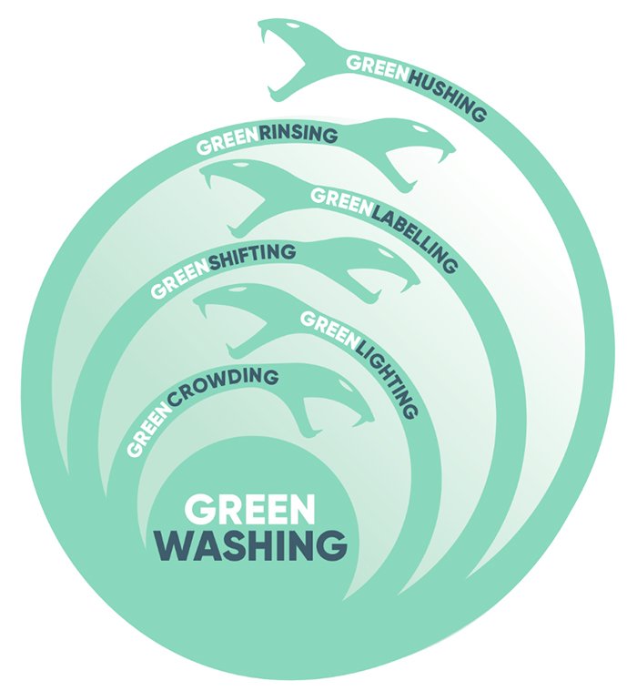

隨著COP(Conference of the Parties)29的閉幕，COP多位資深代表和談判專家批評，這是十年來最糟的氣候大會。其實在COP 29決定主辦國在亞塞拜然時就爭議不斷；不僅亞塞拜然人權紀錄不佳，該國的經濟高度依賴化石燃料，根據美國國際貿易管理局（ITA）的數據，2022年亞塞拜然的化石燃料產量超過年度GDP的50%以及出口收益的92.5%，被認為主辦COP有漂綠嫌疑。
什麼是「漂綠」？
漂綠（Greenwashing）是由代表環保的「Green」和漂白「whitewash」兩個字組合而成的新詞；漂綠簡單來說，就是指政府、企業的行為，明明已經對環境造成衝擊，卻還是刻意誤導，或想要營造大眾錯誤印象。「漂綠」一詞，最早是來自美國環保運動健將韋斯特維德（Jay Westerveld）。1986年，他到斐濟旅行時，發現有飯店老闆以環保為名，希望顧客可以重複使用毛巾，但其實飯店老闆真正的目的是降低洗衣成本，而不是減少對環境的損害。
漂綠的例子
| 1. | 全球第四大航空集團德國漢莎航空（Lufthansa）子公司──奧地利航空（Austria Airlines）在2023年6月遭到罰款。因其在廣告中，聲稱該公司飛往義大利威尼斯的航班使用「永續航空燃料」（SAF），已實踐「碳中和飛行」，要乘客和該公司一起「實踐零碳飛行」。 |
| 2. | 2019 年星巴克響應環保，將吸管替換成有一個小孔的杯蓋，看似減少了吸管的浪費，實際上新的杯蓋的塑膠含量卻比原本的吸管還要多，製造了更多的浪費。星巴克回應塑膠杯蓋是可回收，可重複利用，但根據統計全球只有9%的塑膠被回收；因此如果回收率沒有提高，替換成杯蓋就是一個對環境造成更多破壞的行動。 |
六種漂綠類型
非營利智庫行星追蹤器（Planet Tracker）最新報告把企業最常犯的「漂綠」錯誤分為六大項，將其比喻為「漂綠多頭蛇」（Greenwashing Hydra）。即便目前國內外「漂綠」規範尚未完善，企業仍可透過此六大重點進行自我體檢，待相關規定正式上路時，就不會手足無措。
| greencrowding（綠色隱匿）：企業利用其他組織或群體的力量，以整體統計數據的手段來掩蓋公司在永續或環保方面其實做得不好。 | |
| greenlighting（綠色亮點）：企業特別強調某些產品或服務具有永續、環保的特點，以吸引關注環境議題的投資者或消費者。但這種做法往往會轉移注意力，讓大家忽略了企業對環境可能造成的傷害。 | |
| greenshifting（綠色轉移）：企業會想方設法強調消費者也需要做出環保行動，並將部分環境破壞的責任推給消費者。 | |
| greenlabelling（綠色標籤）：這是企業漂綠最常見的手段之一，藉由媒體宣傳或廣告文宣，在產品或服務上塑造環保形象。常見的方式包含在宣傳圖片中運用海洋、樹林等自然景觀素材，或者在行銷文案中使用乾淨、環境友好、低碳等相關字詞，容易讓大家誤以為企業非常環保，然而實際上可能缺乏第三方認證的支持。 | |
| greenrising（綠色洗白）：企業常常頻繁調整ESG目標，有時朝著減碳的方向努力，有時又著眼於環保，或是提出難以達成的目標。 | |
| greenhushing（綠色掩飾）：一些企業怕出錯，因此選擇不主動公開其永續策略和進展情況，以免遭受外界的嚴厲批評或負面評價。 |
|  |
| 漂綠多頭蛇，圖片來源：行星追蹤器報告。 |
台灣怎麼管制？
一旦企業被揭露漂綠，風險不僅是企業形象嚴重受損外，消費者也會對企業的好感度降低，進而減少或抵制使用該企業的產品或服務，甚至不再考慮投資該公司，這對公司的整體營運和股價都會產生負面影響。此外，根據法律規定，企業若企圖欺騙投資者或消費者以獲取利益，則可能需要承擔相應的法律責任和罰款。
| 1. | 《公平交易法》 企業若以虛偽、誇大或引人誤解的廣告，聲稱其商品或服務具有環保、永續相關特性，可能違反《公平交易法》第21條，涉及不實或引人錯誤的廣告，最高可處罰金新台幣 2,500 萬元。 |
| 2. | 《消費者保護法》 若企業未善盡資訊揭露義務，提供不實或誤導性的環保聲明，損害消費者權益，消費者可依《消保法》要求賠償。 |
| 3. | 環保標章認證機制 經濟部及環保署推動的「環保標章」或「碳足跡標籤」等認證，需符合嚴格標準，違反者可能被撤銷標章資格，並面臨相關罰則。 |
| 4. | 永續報告書要求 上市櫃公司需依「公司治理3.0永續發展藍圖」及金管會規範，編製永續報告書，內容需符合國際標準（如GRI）。若揭露不實資訊，可能涉及違反法規，導致信譽損害及法律責任。 |
| 5. | 《產品標示法》與綠色產品聲明規範 台灣對商品標示有明確規範，若企業在包裝或宣傳中未提供真實的環保資訊，可能違反《產品標示法》。 |
| 6. | 國際標準與自律機制 企業須遵循國際準則，如 ISO 14021（環境標示與聲明）標準，避免自我宣稱或模糊性表達，提供具體且可驗證的環保證據。 |
落實永續，杜絕漂綠
在我們致力於為環境盡一份心力的同時，政府則應透過法律規範與宣導，積極推動永續發展。企業在審視自身活動與碳排放的關聯時，明確監測並透明化碳排放數據，才能杜絕漂綠，實現對環境的真誠承諾。而人民必須擦亮眼睛，仔細檢視企業或商品是否真正對環境友善，避免落入「漂綠」的陷阱。
參考資料：
亞塞拜然接棒：COP29是什麼？四大重點了解今年的聯合國氣候變遷大會
漂綠是什麼？揪出綠皮惡魔！
「漂綠」竟有6種？7大QA一次了解各國定義與法規進度